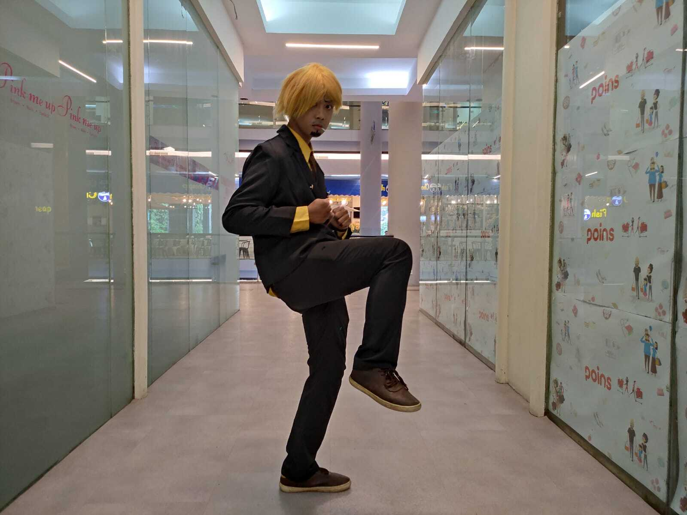

beberapa hobi yang saya sukai di antaranya :
hobi ini udah menjadi sebuah kebiasaan dikala jenuh atau bosan saya biasanya main game untuk sekadar refreshing
kl ada waktu luang dan banyak waktu biasanya saya suka jalan-jalan apalagi kl di hari minggu atau di hari libur saya biasanya jalan jalan keliling ibukota atau ke daerah lain

kadang kala aku juga suka membaca buku untuk sekedar mencari referensi atau menambah ilmu baru

kalau weekend weekend gini daripada cosplay jadi pengangguran di rumah mending cosplay jadi ayang virtual mu aja. mau gak sama abang?
ini mah kek nya gausah ditanya kalau kata gw mah. rela menjaga perasaan ceweknya orang

Aaaa... Yossha Ikuzo! Taiga, Faiya, Saiba, Faiba, Daiba, Baiba, Jya, Jya!!!!